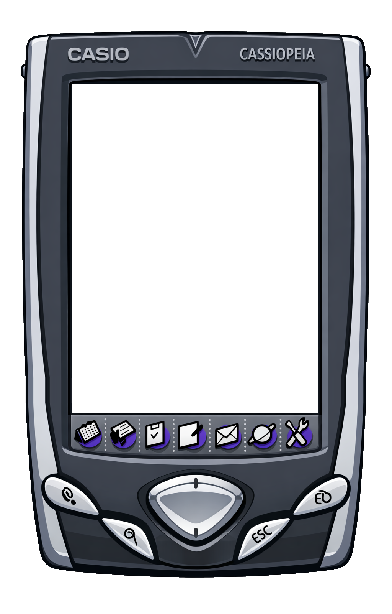

Tap the screen with the pointer. Click the device buttons, or use the arrow keys, Enter and Esc when the keyboard accessory is off.
Ready to boot.

Tap the screen with the pointer. Click the device buttons, or use the arrow keys, Enter and Esc when the keyboard accessory is off.